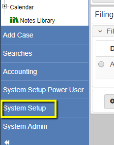
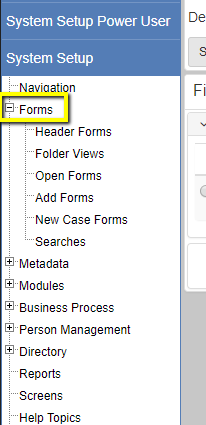
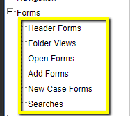
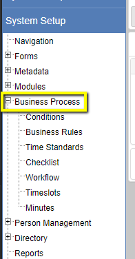
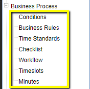
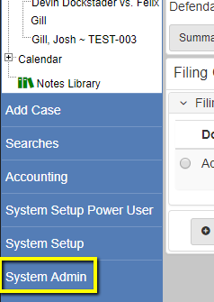
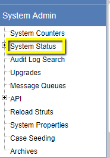
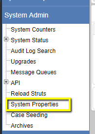
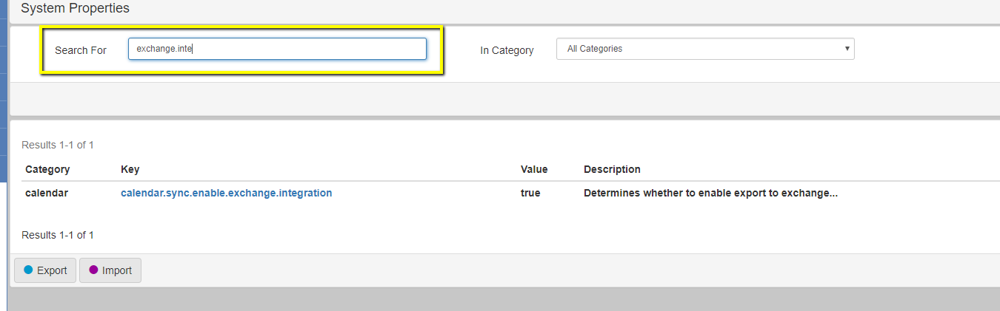

How to Navigate through the system menus
System Menu's are broken up into two major menu groups. System Admin, and System Setup. The Setup drop down will contain anything having to do with general system configuration. Such as navigation, forms/screens configuration, workflow, condition, and business rule configuration, etc. The Admin Menu will contain more system administration tasks. Such as checking on the system status, creating/modifying system counters (used for Case Numbering), and modifying system properties.
Header, Folder, Update, Add, New Case, and Search Forms
Expand the system setup menu
Expand the Screens/Forms section
Select the type of screen you're looking for.
Conditions, Workflows, Business Rules, etc.
Expand the system setup menu
Expand Business Processes
Select the Business Process you're looking for.
Uptime, version, resett deprecation warning, document storage settings, downloads, etc.
Expand the system admin menu
Select System Status (Do not expand, click directly on the link)
Enable/disable exchange sync, change date formatting, modify base eCourt properties or custom eCourt properties
Expand the system admin menu
Select System Properties
Search for the system property you're looking for
